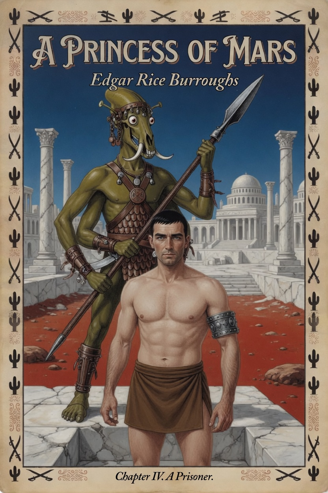
Chapter IV · A Prisoner
A ten-page digest of Edgar Rice Burroughs, 1912. The dead city, the punch, and a word that means jump. Speech under the pictures; the sound stays in the frame. Text from Project Gutenberg #62.

A ten-page digest of Edgar Rice Burroughs, 1912. The dead city, the punch, and a word that means jump. Speech under the pictures; the sound stays in the frame. Text from Project Gutenberg #62.
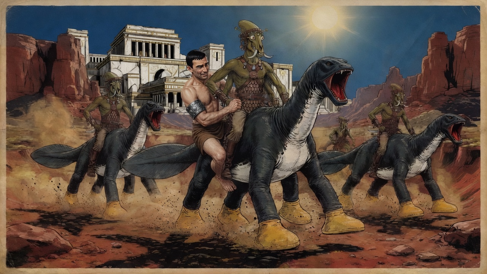
Carter We were nearing the edge of one of Mars’ long-dead seas. A narrow gorge opened into a valley, and at its far extremity I beheld an enormous city.
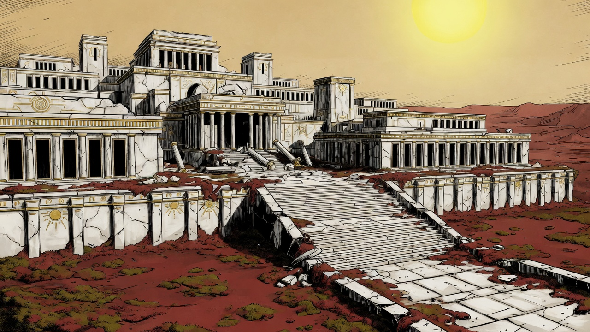
Carter A ruined roadway ended in a flight of broad steps. The buildings were deserted, and had the appearance of not having been tenanted for ages.
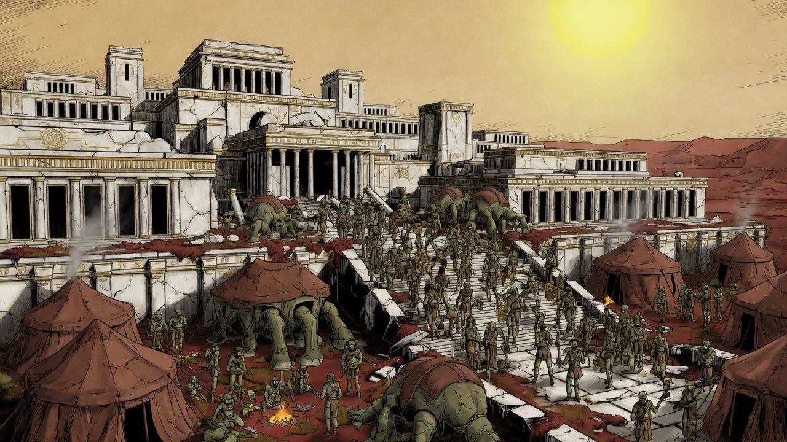
Carter Upon the plaza and in the buildings around it were camped some nine or ten hundred creatures of the same breed as my captors.
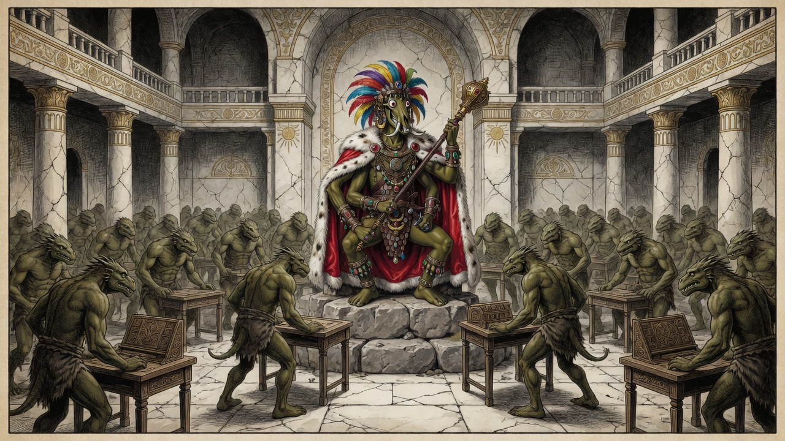
Carter The desks and chairs were of a size adapted to human beings such as I. The Martians could scarcely have squeezed into them. Another race had built this hall.
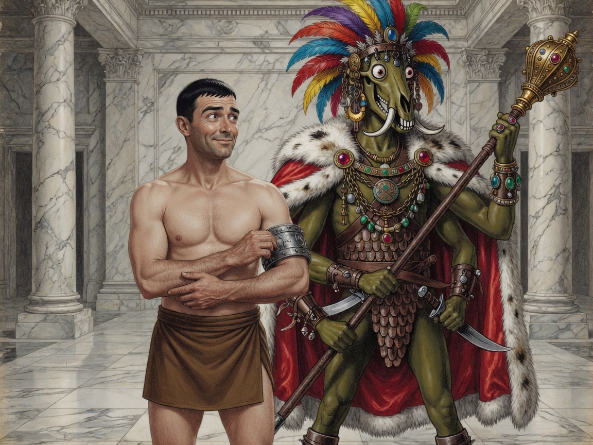
Carter My captor, whose name was Tars Tarkas, was virtually the vice-chieftain. I replied in English. When I smiled, the chieftain did likewise.
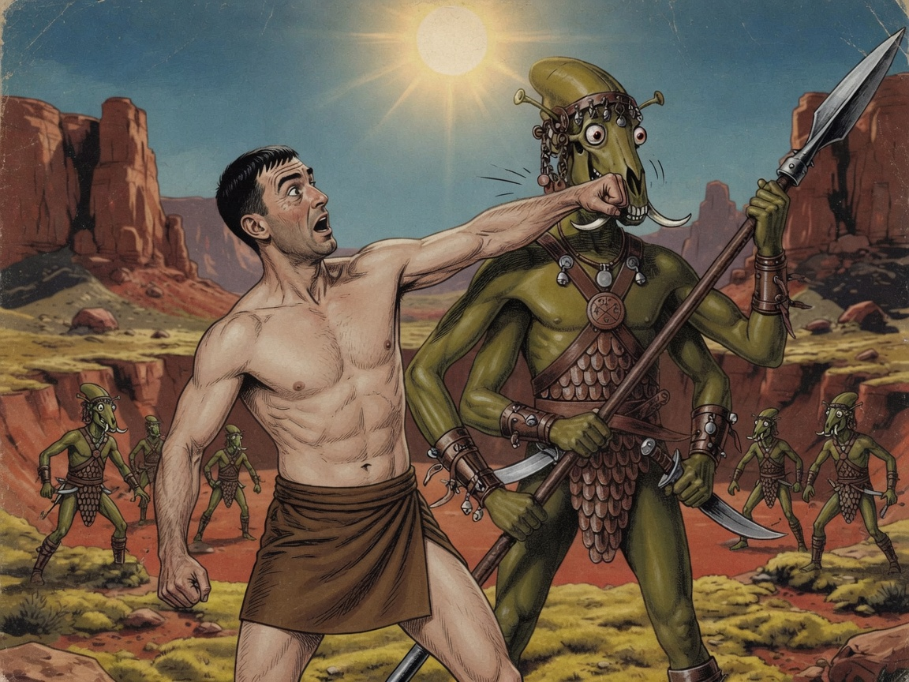
Carter He banged me down upon my feet, his face bent close to mine. I swung my fist squarely to his jaw and he went down like a felled ox.
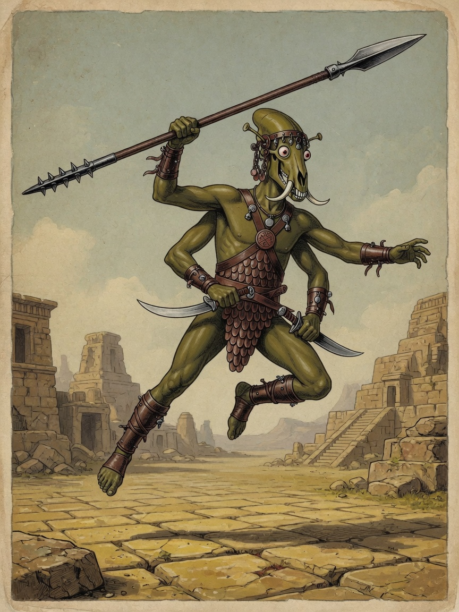
Tars Tarkas Sak! Sak!
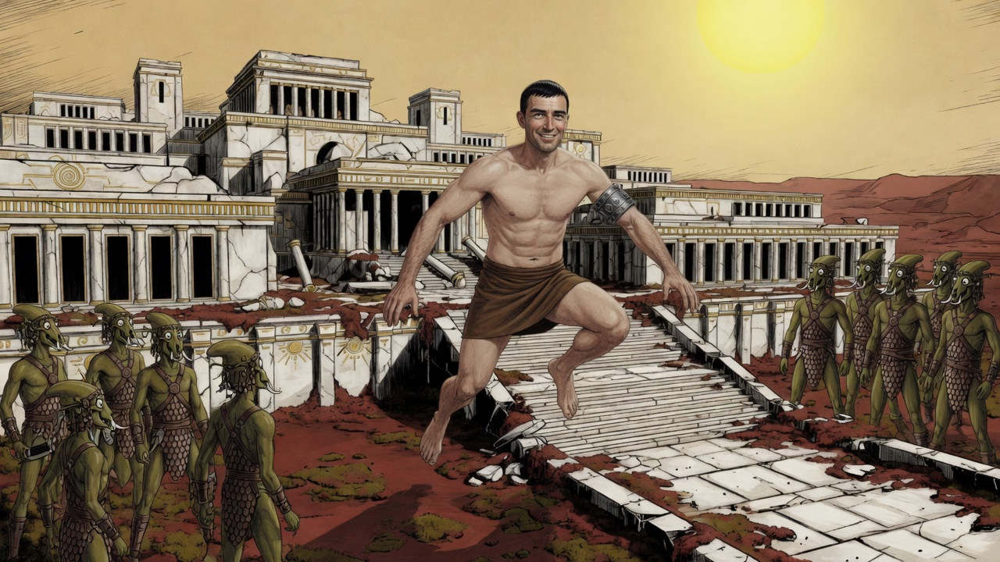
Carter I “sakked” a good hundred and fifty feet, and landed squarely upon my feet.
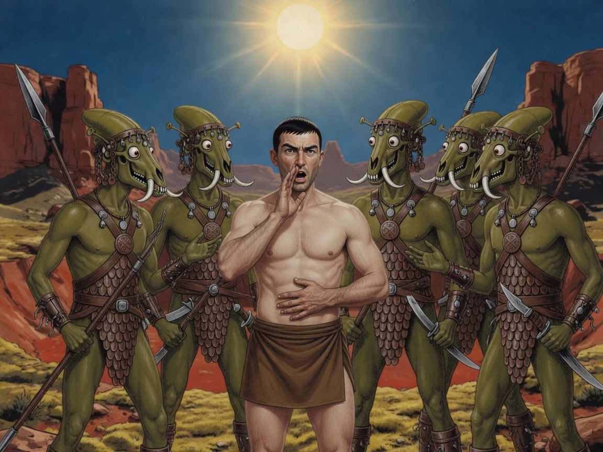
Carter They ordered a repetition. I ignored them, and each time motioned to my mouth and rubbed my stomach.
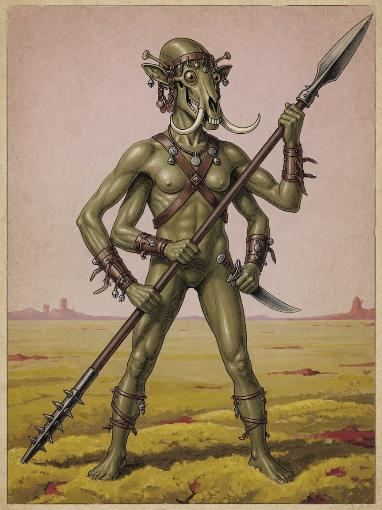
Carter A young female, about eight feet tall, light olive-green. Her name, as I afterward learned, was Sola. She belonged to the retinue of Tars Tarkas.
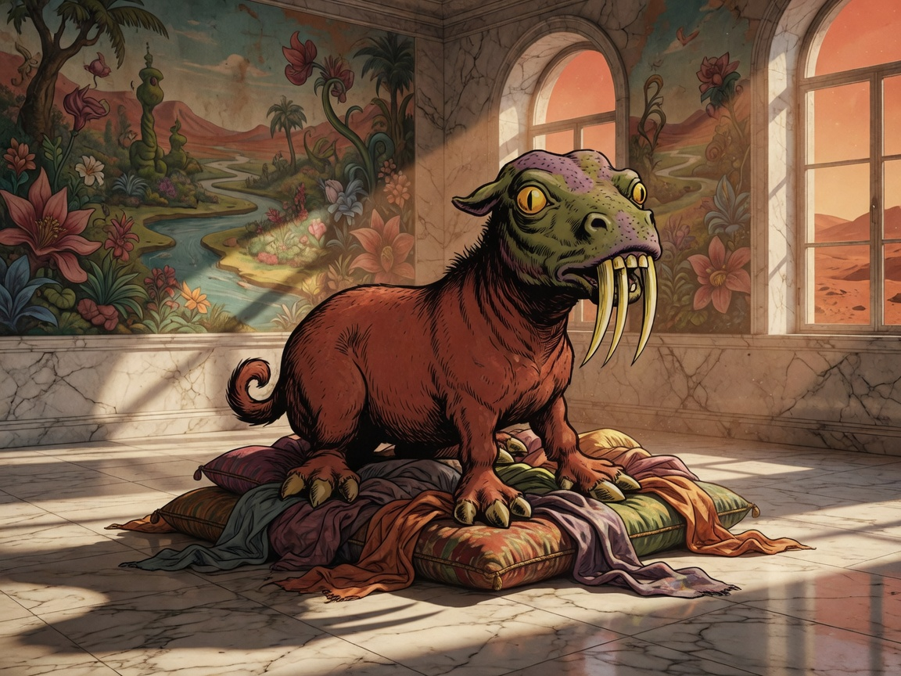
Carter It waddled in on its ten short legs and squatted like an obedient puppy. The size of a Shetland pony; a frog’s head; three rows of tusks.
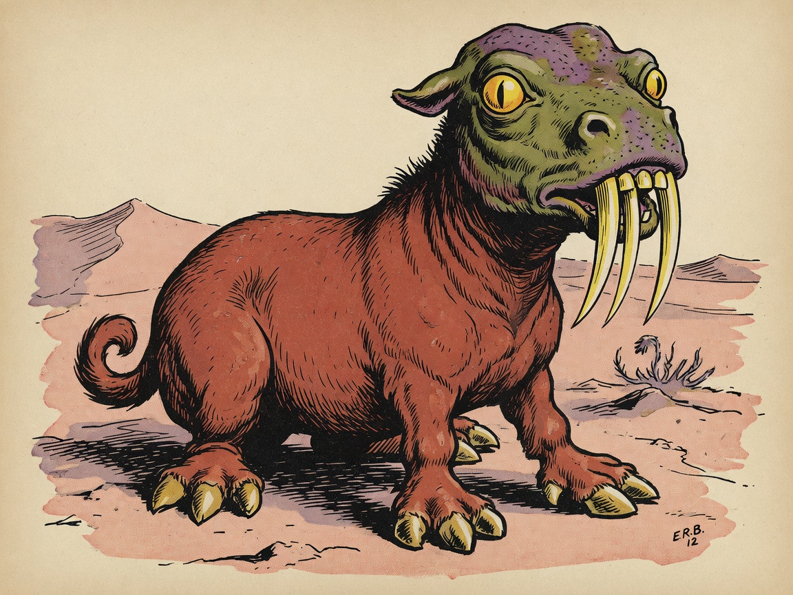
Next Chapter V — I Elude My Watch Dog.
Chapter III · A Princess of Mars · Chapter V next